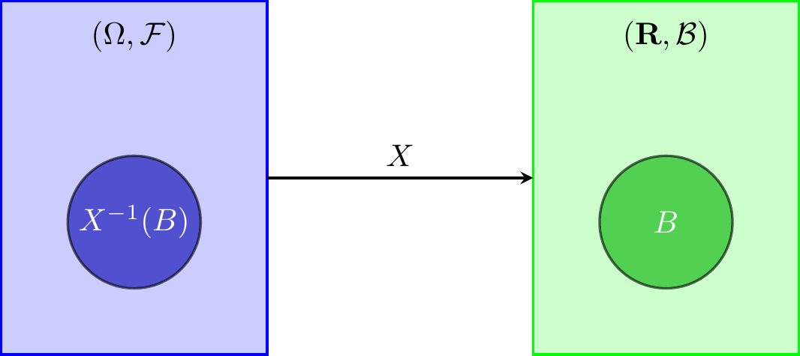
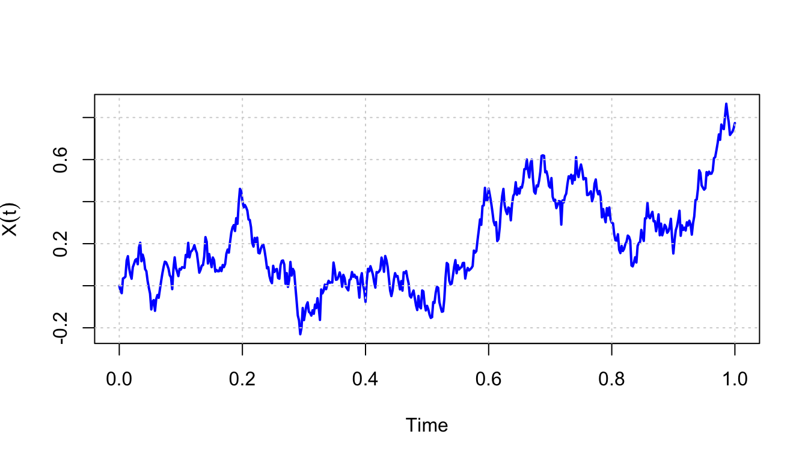

1 Introduction to Stochastic Processes
1.1 Fundamental Concepts
This section provides a brief review of basic concepts in probability theory and random variables. We then introduce the notion of a stochastic process, understood as a family of random variables defined on a probability space and indexed by a parameter set, typically interpreted as time. Finally, we examine some fundamental classes of stochastic processes, in particular those with independent and stationary increments, as well as strictly and weakly stationary processes.
The sample space is denoted by \(\Omega\) and represents the set of all possible outcomes of a random experiment. Throughout this section, we assume that \(\Omega\) is a non-empty set.
\(\,\)
Definition 1.1 (Sigma-algebra) A \(\sigma\)-algebra is a collection \(\mathcal{F}\) of subsets of \(\Omega\) satisfying the following properties:
\(\emptyset \in \mathcal{F}\) and \(\Omega \in \mathcal{F}\);
If \(A \in \mathcal{F}\), then \(A^c \in \mathcal{F}\), where \(A^c\) denotes the complement of \(A\) with respect to \(\Omega\);
If \(A_n \in \mathcal{F}\) for all \(n \in \mathbb{N}\) and the sets are countable, then
\[ \bigcup_{n \in \mathbb{N}} A_n \in \mathcal{F}. \]
The elements of \(\mathcal{F}\) are called measurable sets (or \(\mathcal{F}\)-measurable sets to specify the underlying \(\sigma\)-algebra).
\(\,\)
Definition 1.2 (Probability Measure) A probability measure \(P\) on the \(\sigma\)-algebra \(\mathcal{F}\) is a function
\[
P: \mathcal{F} \rightarrow [0, 1]
\]
satisfying the following properties:
\(P(\emptyset) = 0\);
\(P(\Omega) = 1\);
If \((A_n)_{n \in \mathbb{N}}\) is a sequence of pairwise disjoint sets in \(\mathcal{F}\), then
\[ P\left(\bigcup_{n \in \mathbb{N}} A_n\right) = \sum_{n \in \mathbb{N}} P(A_n). \]
\(\,\)
Definition 1.3 (Probability Space) A probability space is a triple \((\Omega, \mathcal{F}, P),\) where:
- \(\Omega\) is a set (the sample space),
- \(\mathcal{F}\) is a \(\sigma\)-algebra on \(\Omega\),
- \(P\) is a probability measure on \(\mathcal{F}\).
The elements of \(\mathcal{F}\) are called events. For any \(A \in \mathcal{F}\), the value \(P(A)\) represents the probability of the event \(A\).
\(\,\)
Definition 1.4 (Borel Sigma-algebra) A Borel \(\sigma\)-algebra, denoted \(\mathcal{B}\), defined on a set \(E\), satisfies the following properties:
\(\emptyset \in \mathcal{B}\) and \(E \in \mathcal{B}\);
\(\mathcal{B}\) is closed under complementation: for all \(A \in \mathcal{B}\), we have \(A^c \in \mathcal{B}\);
\(\mathcal{B}\) is closed under countable unions: if \(A_i \in \mathcal{B}\) for all \(i \in \mathbb{N}\), then
\[ \bigcup\limits_{i \in \mathbb{N}} A_i \in \mathcal{B}. \]
A Borel \(\sigma\)-algebra is a specific example of a \(\sigma\)-algebra and is typically associated with the open sets of \(E\). The most common Borel \(\sigma\)-algebra is the one on \(\mathbb{R}\), denoted by \(\mathcal{B}_{\mathbb{R}}\), or simply \(\mathcal{B}\) when there is no ambiguity.
\(\,\)
Definition 1.5 (Random Variable) Let \((\Omega, \mathcal{F}, P)\) be a probability space. A function
\[
X: \Omega \rightarrow \mathbb{R}
\]
is said to be a random variable (r.v.) if
\[
\forall ~ B \in \mathcal{B}: X^{-1}(B) \in \mathcal{F},
\]
where \(\mathcal{B}\) denotes the Borel \(\sigma\)-algebra on \(\mathbb{R}\).
In addition, we say that \(X\) is \(\mathcal{F}\)-measurable, or simply measurable when the \(\sigma\)-algebra is understood from context.

\(\,\)
Theorem 1.1 Let \(X: \Omega \to \mathbb{R}\) be a random variable. Define \[ \sigma(X) = \{ X^{-1}(B) : B \in \mathcal{B} \}. \] Then, \(\sigma(X)\) is the smallest \(\sigma\)-algebra on \(\Omega\) with respect to which \(X\) is measurable. This \(\sigma\)-algebra, which is contained in \(\mathcal{F}\), is called the \(\sigma\)-algebra generated by \(X\).
\(\,\)
Definition 1.6 (Mean and Variance) Let \((\Omega, \mathcal{F}, P)\) be a probability space, and let \(X: \Omega \rightarrow \mathbb{R}\) be a random variable. The expected value (or mean) and the variance of \(X\) are defined as follows:
1. General case (with probability measure \(P\)): \[ E(X) = \int_\Omega X \, dP, \quad \operatorname{Var}(X) = \int_\Omega (X - E(X))^2 \, dP, \] provided these integrals exist and are finite.
2. Discrete case:
If \(X\) takes values in a discrete set \(\{x_1, x_2, \dots\}\) with probabilities \(p_i = P(X = x_i)\), then
\[
E(X) = \sum_i x_i \, p_i, \quad
\operatorname{Var}(X) = \sum_i (x_i - E(X))^2 \, p_i.
\]
3. Continuous case:
If \(X\) has a probability density function \(f_X(x)\) with respect to the Lebesgue measure, then
\[
E(X) = \int_{-\infty}^{+\infty} x f_X(x) \, dx, \quad
\operatorname{Var}(X) = \int_{-\infty}^{+\infty} (x - E(X))^2 f_X(x) \, dx.
\]
\(\,\)
Definition 1.7 Let \((\Omega, \mathcal{F}, P)\) be a probability space, and let \(X\) be a random variable defined on this space.
\(X\) is said to be a square-integrable random variable if
\[ E(X^2) < +\infty; \]The space \(L^2\) is the set of all square-integrable random variables defined on \((\Omega, \mathcal{F}, P)\);
The \(L^2\) norm is defined by \[ \forall ~ X \in L^2:~ \|X\|_{L^2} = \left(E(X^2)\right)^{1/2}. \]
\(\,\)
Definition 1.8 Let \((X_n : n \in \mathbb{N})\) be a sequence of random variables in \(L^2\). We say that \((X_n)\) converges to \(X\) in \(L^2\) if \[ \|X_n - X\|_{L^2} \rightarrow 0 \quad \text{as} \quad n \to +\infty, \] or, equivalently, \[ E\left((X_n - X)^2\right) \to 0 \quad \text{as} \quad n \to +\infty. \]
This type of convergence is called mean square convergence, and it is denoted by \[ X_n \xrightarrow{m.s.} X \quad \text{as} \quad n \to +\infty, \] or \[ \mathop{l.i.m.}\limits_{n \to +\infty} X_n = X. \]
\(\,\)
Definition 1.9 Let \(X\) be a random variable and let \((X_n : n \in \mathbb{N})\) be a sequence of random variables defined on the probability space \((\Omega, \mathcal{F}, P)\).
We say that \(X_n\) converges almost surely (a.s.) to \(X\), or that it converges with probability 1, denoted by
\[ X_n \xrightarrow{a.s.} X \quad \text{or} \quad \lim_{n \to +\infty} X_n = X \quad \text{a.s.}, \]
if \(X_n(\omega) \to X(\omega)\) for all \(\omega \in \Omega \setminus N\), where \(N \in \mathcal{F}\) is a null set, i.e., \(P(N) = 0\).We say that \(X_n\) converges in probability (or stochastically) to \(X\), denoted by
\[ X_n \xrightarrow{P} X \quad \text{or} \quad P\text{-}\lim_{n \to +\infty} X_n = X, \]
if, for every \(\delta > 0\),
\[ P(|X_n - X| > \delta) \to 0 \quad \text{as} \quad n \to +\infty. \]
\(\,\)
When studying phenomena that exhibit no temporal evolution, one typically uses random samples — that is, repetitions of i.i.d. observations (independent and identically distributed).
But what if we are dealing with random variables that have already been observed (or could have been) in the past and may be observed again in the future?
This is the case, for example, when studying:
the daily price of a stock on the financial market;
the evolution of the unemployment rate over a given period;
the number of people arriving at a certain queue to be served;
the temperature over time at a specific location;
\(\ldots\)
In such cases, we typically have only a single realisation (called a trajectory or sample path) from which we seek to draw conclusions.
In this trajectory, observations are no longer independent.
Typical objectives include:
forecasting future values;
identifying the nature of the underlying evolution;
filtering (i.e., prediction using partial observations).
\(\,\)
Definition 1.10 (Stochastic Process) A stochastic process (SP) is a family of random variables \(\{X_t, ~t \in T\}\) defined on the same probability space \((\Omega, \mathcal{F}, P)\) and taking values in the same measurable space \((E, \mathcal{B})\), where:
\(T\): parameter space (or time);
\(\Omega\): sample space;
\(\mathcal{F}\): \(\sigma\)-algebra defined on \(\Omega\);
\(P\): probability measure;
\(E\): state space (values taken by \(X\));
\(\mathcal{B}\): Borel \(\sigma\)-algebra defined on \(E\).
\(\,\)
Remark.
Given a probability space \((\Omega, \mathcal{F}, P)\) and an arbitrary set \(T\), a SP is a function \(X(t,\omega)\) defined on \(T \times \Omega\), such that for each \(t \in T\), \(X_t(\omega)\) is a random variable.
The concept of SP generalises that of a random variable by making it depend on a parameter \(t\) with domain \(T\). Thus, a SP can be interpreted as an ordered family of random variables.
For each fixed \(\omega_0 \in \Omega\), \(X(\omega_0, t)\) is a non-random function of \(t\). In this way, a SP can be identified with a system that assigns to each point \(\omega \in \Omega\) a function of the parameter \(t\). Each of these functions is called a trajectory or realisation of the process \(X\).
\(\,\)
Definition 1.11 (Trajectory of a stochastic process) The trajectory or realisation of a stochastic process \(X\) is the collection \[ \{X_t(\omega), ~ t \in T\}, \quad \forall ~ \omega \in \Omega. \]
\(\,\)
Remark. In general, \((E, \mathcal{B}) = (\mathbb{R}^n, \mathcal{B}_{\mathbb{R}^n})\), where:
\(\mathbb{R}^n\): the set of possible values of the process \(X_t\);
\(\mathcal{B}_{\mathbb{R}^n}\): the Borel \(\sigma\)-algebra on \(\mathbb{R}^n\);
If \(n=1\), the SP is called a univariate stochastic process;
If \(n > 1\), the SP is called a multivariate stochastic process;
\(t\): the instant at which the observation is made or the time period relative to that observation;
If \(E\) is finite or countably infinite, then \(X\) is a discrete state space stochastic process;
If \(E = \mathbb{R}\), then \(X\) is a real-valued stochastic process;
If \(T\) is finite or countably infinite, then \(X\) is a discrete time stochastic process (typically \(T = \mathbb{N}_0\) or \(T = \mathbb{Z}\));
If \(T\) is uncountably infinite, then \(X\) is a continuous time stochastic process (typically \(T = \mathbb{R}^+_0\) or \(T = \mathbb{R}\)).
\(\,\)
Below is an example of a trajectory of a stochastic process:

\(\,\)
Exercise 1.1 For each of the following stochastic processes, indicate the parameter space and the state space:
Let \(X_i\) be the amount of beer (in litres) ordered by the \(i\)-th customer entering a bar, and let \(N(t)\) be the number of customers who have arrived at the bar by time \(t\). The stochastic process is \[ Z_t = \sum\limits_{i=1}^{N(t)} X_i, \quad t \geq 0, \] where \(Z_t\) represents the total amount of beer ordered up to time \(t\).
A baby sleeps in one of three positions: (i) lying on their back with a radiant expression; (ii) curled up in the fetal position; (iii) in the fetal position sucking their thumb. Let \(X_t\) be the baby’s sleeping position at time \(t\). The process is \((X_t: \quad t \geq 0)\).
Let \(X_n\) be the state (on or off) of an office photocopier at noon on the \(n\)-th day. The process is \((X_n: \quad n = 1, 2, \dots)\).
1.2 Classical types of stochastic processes
1.2.1 Processes with independent and stationary increments
Definition 1.12 (Process with independent increments) \(\{X_t, ~ t \in T\}\) is a stochastic process with independent increments if and only if \[ \forall ~ n \in \mathbb{N}, \forall ~ t_1, \ldots, t_n \in T: ~ t_1 < t_2 < \ldots < t_n \implies X_{t_2} - X_{t_1}, X_{t_3} - X_{t_2}, \ldots, X_{t_n} - X_{t_{n-1}} \] are mutually independent random variables.
\(\,\)
Definition 1.13 (Process with stationary increments) \(\{X_t, ~ t \in T\}\) has stationary increments if and only if for all \(s, t \in T\), with \(s < t,\) the distribution of \(X_t - X_s\) depends only on the length \(t - s\).
\(\,\)
Remark. In a stochastic process with stationary increments, the distribution of \(X_{t_1 + h} - X_{t_1}\) is the same as that of \(X_{t_2 + h} - X_{t_2}\), for all \(t_1, t_2 \in T\) and for all \(h \in \mathbb{R}_0^+\) such that \(t_1 + h, t_2 + h \in T\).
\(\,\)
Definition 1.14 (Process with independent and stationary increments) Given a stochastic process (SP) \(X := \{X_t, ~ t \in T\}\), where \(T\) is equipped with an order relation, \(X\) is a process with independent and stationary increments if and only if it has independent increments and stationary increments.
1.2.2 Real Second-Order Stochastic Process
Definition 1.15 (Gaussian Process) A stochastic process \(\{X_t, ~t \in T\}\) is called a Gaussian Process if \[ \forall ~n \in \mathbb{N},~ \forall ~t_1, \ldots, t_n \in T, \quad (X_{t_1}, X_{t_2}, \ldots, X_{t_n}) \sim \mathcal{N}_n(\mu, \Sigma), \] that is, any finite vector of random variables from the process has a multivariate normal distribution.
\(\,\)
Definition 1.16 (Real Second-Order Stochastic Process) A stochastic process \(\{X_t, ~ t \in T\}\) is called a real second-order stochastic process if, and only if, \[ \forall ~t \in T: \; E\!\left(X_t^2\right) < +\infty. \]
\(\,\)
Example 1.1 (Gaussian White Noise) A Gaussian White Noise process \(\{\varepsilon_t, ~t \in T\}\) is defined as a stochastic process that satisfies:
\(\forall ~t \in T, ~E(\varepsilon_t)=0\);
\(\forall ~t \in T, ~\mathrm{Var}(\varepsilon_t)=\sigma^2\);
\(\forall ~s, t \in T, s \neq t, ~\mathrm{Cov}(\varepsilon_s,\varepsilon_t)=0\);
\(\forall ~n \in \mathbb{N}, \forall ~t_1, t_2, \ldots, t_n \in T\), the vector \((\varepsilon_{t_1}, \varepsilon_{t_2}, \ldots, \varepsilon_{t_n})\) is Gaussian.
1.2.3 Stationary Processes
Definition 1.17 (Strictly Stationary Process) A stochastic process \(\{X_t,~ t \in T\}\) is said to be strictly stationary (or strongly stationary) if: \[ \forall~n \in \mathbb{N},~ \forall~t_1, \ldots, t_n \in T,~ \forall~h \in \mathbb{R} \text{ such that } t_1 + h, \ldots, t_n + h \in T, \] \[ (X_{t_1}, \ldots, X_{t_n}) \stackrel{d}{=} (X_{t_1+h}, \ldots, X_{t_n+h}), \] that is, the joint distribution of any finite vector of random variables of the process is invariant under time shift.
As a consequence of strict stationarity, we have the following theorem:
Theorem 1.2 If \(\{X_t, t \in T\}\) is a second-order stochastic process and is strictly stationary, then:
\(E(X_t) = m\), that is, the mean of the process is independent of \(t\);
\(\forall ~h \in T, ~ \Gamma(t,t+h) = \operatorname{Cov}(X_t, X_{t+h}) = \operatorname{Cov}(X_0, X_h) = \gamma(h)\), independent of \(t\).
\(\,\)
Definition 1.18 (Weakly Stationary Process) A stochastic process \(\{X_t, t \in T\}\) is weakly stationary (or second-order stationary) if and only if:
\(\forall ~t \in T, ~ E(X_t^2) < +\infty\);
\(\forall ~t \in T, ~ E(X_t) = m\), independent of \(t\);
\(\forall ~t \in T, \forall ~h \in T, ~ \operatorname{Cov}(X_t, X_{t+h}) = \gamma(h)\), i.e., the covariance depends only on \(h\).
\(\,\)
Remark. The function \(\gamma(h), ~ \forall ~ h \in T\), is called the autocovariance function. If \(h=0\), then \[ \operatorname{Cov}(X_t, X_{t+h}) = \operatorname{Var}(X_t) = \gamma(0), \quad \forall ~ t \in T. \] This property is called homoscedasticity.
\(\,\)
Now, let’s see that White Noise, \(\{\varepsilon_t, ~ t \in T\}\), is an example of a second-order stationary stochastic process:
Example 1.2
\(E(\varepsilon_t) = 0\);
\(Var(\varepsilon_t) = \sigma^2 \implies E(\varepsilon_t^2) < + \infty\);
For \(t \neq s\), \(Cov(\varepsilon_s, \varepsilon_t) = 0 \implies\) independence between \(t\) and \(s\).
Thus,
\[ \gamma(h) = \begin{cases} \sigma^2, & h = 0, \\ 0, & h \neq 0. \end{cases} \]
Hence, the conditions for weak stationarity are satisfied.
\(\,\)
Remark (Important remark). \[\text{Strong stationarity} + E(X_t^2) < +\infty \Rightarrow \text{Weak stationarity}.\] \[\text{Weak stationarity} \nRightarrow \text{Strong stationarity}.\]
\(\,\)
Example 1.3 Consider the stochastic process \((X_t, ~ t \in \mathbb{N})\) where \(X_t\) has a Cauchy distribution, i.e., with probability density function \[ f(x) = \frac{1}{\pi(1 + x^2)}. \] Since \(E(X_t)\) does not exist, then \(E(X_t^2)\) is not defined. Thus, the process is strongly stationary but not weakly stationary.
\(\,\)
Definition 1.19 (Autocorrelation function in stationary processes) Let \(\{X_t, ~ t \in T\}\) be a stationary stochastic process. The autocorrelation function \(\rho\) is defined by: \[ \rho(h) = Corr(X_t, X_{t+h}) = \frac{Cov(X_t, X_{t+h})}{\sqrt{Var(X_t)} \sqrt{Var(X_{t+h})}} = \frac{\gamma(h)}{\gamma(0)}. \]
\(\,\)
Exercise 1.2 Let \(X\) and \(Y\) be two random variables with zero mean, uncorrelated, and with the same variance \(\sigma^2 > 0\). Consider the stochastic process \((Z_t: ~ t \in \mathbb{Z})\) defined by:
\[ Z_t = f(t) \cdot X + g(t) \cdot Y, \quad t \in \mathbb{Z}, \]
where \(f\) and \(g\) are deterministic functions.
Find expressions for \(f\) and \(g\) so that the process \((Z_t: ~ t \in \mathbb{Z})\) has constant variance but is not necessarily weakly stationary.
Specify \(f\) and \(g\) such that \((Z_t: ~ t \in \mathbb{Z})\) is weakly stationary.
\(\,\)
Exercise 1.3 Let \(\varepsilon = (\varepsilon_t: ~ t \in \mathbb{Z})\) be a white noise process with variance \(\sigma^2 > 0\). Consider the stochastic processes \(X = (X_t: ~ t \in \mathbb{Z})\) and \(Y = (Y_t: ~ t \in \mathbb{Z})\) defined by:
\[ X_t = \varepsilon_t \quad \text{and} \quad Y_t = (-1)^t \varepsilon_t, \quad \forall ~ t \in \mathbb{Z}. \]
Prove that \(X\) and \(Y\) are weakly stationary.
Show that the process \((Z_t = X_t + Y_t: ~ t \in \mathbb{Z})\) is a non-stationary process.
\(\,\)
Exercise 1.4 Consider a stochastic process \(Y = (Y_t: t \in \mathbb{Z})\) such that \[Y_t = \varepsilon_t - \theta \varepsilon_{t-1}, \quad \theta \in [-1,1],\] where \((\varepsilon_t: t \in \mathbb{Z})\) is a Gaussian white noise with variance \(\sigma^2 > 0\).
Show that \(Y\) is Gaussian.
Determine the distribution of the random variable \(Y_t\), for all \(t \in \mathbb{Z}\).
Determine the autocorrelation function of \(Y\).
What can you conclude about the strong and weak stationarity of \(Y\)?
\(\,\)
Exercise 1.5 Let \(X = (X_t: ~ t \geq 0)\) be a stochastic process defined on the probability space \((\Omega, \mathcal{F}, P)\) such that, for every \(t \geq 0\), \(X_t \sim \mathcal{N}(0, t)\) and \(P(X_0 = 0) = 1\).
Assuming \(X\) is a process with independent and stationary increments, show that:
For all \(t, s \in [0,+\infty)\) with \(t > s\), it holds that \[X_t - X_s \sim \mathcal{N}(0, |t - s|);\]
\(X\) is a centered Gaussian process.
Consider the stochastic process \(Y = (Y_t: t \geq 0)\) defined by: \[ Y(t) = \begin{cases} t, & \text{if } X_t \geq 0, \\ -t, & \text{if } X_t < 0. \end{cases} \] Show that \(Y\) is a centered second-order stochastic process. Is \(Y\) stationary in any sense? Justify your answer.
\(\,\)
Exercise 1.6 Let \(X = (X_t: ~t \in \mathbb{Z})\) and \((\varepsilon_t: ~t \in \mathbb{Z})\) be two stochastic processes defined on the probability space \((\Omega, \mathcal{F}, P)\), such that: \[ \forall ~t \in \mathbb{Z}, \quad X_t = \sum\limits_{j=0}^{+\infty} \left( \frac{4}{5} \right)^j \varepsilon_{t-j}. \]
Explain under which conditions \(\varepsilon\) is a white noise.
Suppose that \(\varepsilon\) is a white noise such that \(E[\varepsilon_t^2] = 9/50\).
Prove that \(X\) is weakly stationary and indicate the corresponding mean function and autocovariance function;
Now suppose that \(X\) is a Gaussian process. Specify the distribution of the random vector \((X_t, X_s), ~ \forall ~ t, s \in \mathbb{Z}\).
Consider the stochastic process \(Y = (Y_t: t \in \mathbb{Z})\) defined by: \[ Y_t = \begin{cases} \frac{1}{2}, & \text{if } X_t \geq 0, \\ -1, & \text{if } X_t < 0, \end{cases} \] assuming that \(X\) satisfies the conditions in item (b) ii). Calculate the mean function of \(Y\) and show that \(Y\) is weakly stationary.
\(\,\)
Exercise 1.7 Let \((\varepsilon_t: t \in \mathbb{Z})\) be a Gaussian white noise with variance \(\sigma^2 > 0\). Consider another stochastic process \((Y_t: ~t \in \mathbb{Z})\) defined by: \[ Y_t = \varepsilon_t - \theta \varepsilon_{t-1} - \frac{\theta}{2} \varepsilon_{t-2}, \quad \theta \in [-1,1]. \]
Define a Gaussian process and show that \(Y\) is Gaussian.
Determine the autocorrelation function of the process \(Y\).
1.2.4 Martingales
From a modeling perspective, martingales are suitable for modeling random phenomena such as gambling.
Definition 1.20 (Martingale) A stochastic process \(\{X_t, ~ t \in T\}\) is a Martingale if and only if:
\(E(|X_t|) < +\infty\);
For all \(n \in \mathbb{N}\), for all \(t_1 < \ldots < t_{n+1} \in T\): \[ E(X_{t_{n+1}} \mid X_{t_1}, \ldots, X_{t_n}) = X_{t_n}. \]
\(\,\)
Remark. In the definition of Martingale, we can also consider:
Submartingales, when for all \(n \in \mathbb{N}\) and for all \(t_1 < \ldots < t_{n+1} \in T\): \[ E(X_{t_{n+1}} \mid X_{t_1}, \ldots, X_{t_n}) \leq X_{t_n}. \]
Supermartingales, when for all \(n \in \mathbb{N}\) and for all \(t_1 < \ldots < t_{n+1} \in T\): \[ E(X_{t_{n+1}} \mid X_{t_1}, \ldots, X_{t_n}) \geq X_{t_n}. \]
\(\,\)
Exercise 1.8
Let \(X_0, X_1, \dots\) be independent random variables with finite zero mean and define \(S_n = \sum_{i=0}^n X_i\). Show that the stochastic process \(\{S_n: n \in \mathbb{N}_0\}\) is a Martingale.
\(\,\)
Exercise 1.9
Consider a game where in each round the player can win or lose one euro, with equal probability. After \(n\) rounds, the player’s gain is given by \(S_n = \sum_{i=1}^n X_i\), where \(X_1, X_2, \dots\) are independent random variables. Show that the stochastic process \(\{S_n: n \in \mathbb{N}\}\) is a Martingale.
\(\,\)
Exercise 1.10
Let \(X_1, X_2, \dots\) be independent random variables with mean one. Show that the stochastic process \(\{Z_n: n \in \mathbb{N}\}\) defined by \[ Z_n = \prod_{i=1}^n X_i \] is a Martingale.
\(\,\)
Exercise 1.11 Let \((X_n, n=0,1,2,\dots)\) be a stochastic process with state space \(\mathbb{N}_0\), with mean one for \(n \geq 1\), independent increments, and such that \(P(X_0=0) = 1\).
What does it mean to say that the process \(X\) has independent increments?
Prove that the process \((X_n, n=0,1,2,\dots)\) is a Martingale.
Given that \(Var(X_n) = 1\), what can be said about the weak stationarity of the process \((X_n, n=0,1,2,\dots)\)?
1.2.5 Markov Processes
Markov processes are suitable for modeling random phenomena whose future behavior is not influenced by the knowledge of their past, but only depends on the current state. In other words, the probability that the physical system is in a given state at time \(t\) can be deduced from the knowledge of that state at any previous time, and this probability does not depend on the “history” of the system before \(t\).
\(\,\)
Definition 1.21 (Markov Process) A stochastic process \(\{X_t, t \in T\}\) with state space \(E\) is called a Markov process (or Markovian) if and only if for all \(n \in \mathbb{N}\), for all \(t_1 < \ldots < t_{n+1} \in T\), for all \(x_1, \ldots, x_{n+1} \in E\), and for all \(B \in \mathcal{B}\): \[ P(X_{t_{n+1}} \in B \mid X_{t_1} = x_1, \ldots, X_{t_n} = x_n) = P(X_{t_{n+1}} \in B \mid X_{t_n} = x_n). \]
\(\,\)
Theorem 1.3 If \(E\) is discrete and \(T = \mathbb{N}\), the Markov property in the previous definition is equivalent to the following: \[ \forall ~n \in \mathbb{N}, ~\forall ~x_0, \ldots, x_{n+1} \in E: P(X_0 = x_0, \ldots, X_n = x_n) > 0, \text{ we have } \] \[ P(X_{n+1} = x_{n+1} \mid X_0 = x_0, \ldots, X_n = x_n) = P(X_{n+1} = x_{n+1} \mid X_n = x_n). \]
\(\,\)
Remark. Markov processes, like any stochastic processes, are classified according to the nature of the state space \(E\) and the parameter space \(T\). A special class of Markov processes are Markov Chains (M.C.): Markov processes with discrete state space \(E\).
Thus, a Markov chain can be interpreted as a stochastic process whose evolution can be seen as a series of transitions between fixed values having the property that the probability distribution of the future state, given that the process is currently in a certain state, depends only on that state and not on how the process arrived there. Markov chains are classified as either discrete-time or continuous-time.